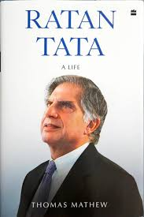

Welcome to the Ratan Tata
Ratan Naval Tata(28 December 1937 – 9 October 2024) was an Indian industrialist and philanthropist. He served as the chairman of Tata Group and Tata Sons from 1991 to 2012 and he held the position of interim chairman from October 2016 to February 2017.